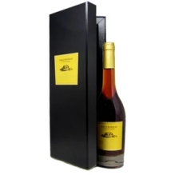
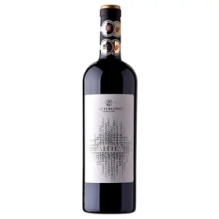
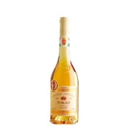
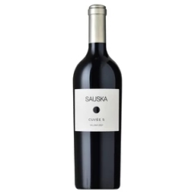

Üdvözöljük a GypoWinery Borainak az oldalán! Fedezze fel a Csévharaszti borok gazdag választékát, melyek a helyi terroir és tradíciók egyedülálló ötvözetét kínálják.
79.990 Ft
Ízjegyek: Gazdag gyümölcsös aromák, piros bogyós gyümölcsök és fűszeres jegyek. Tálalás: 16-18 °C között, tökéletes steakhez vagy grillezett húsokhoz.
56.999 Ft
Ízjegyek: Mély, komplex ízek, fekete ribizli és tölgyes árnyalatok. Tálalás: 18-20 °C, ajánljuk füstölt sajtokkal vagy gazdag ételekkel.
53.990 Ft
Ízjegyek: Friss és üde, citrusos és virágos aromákkal. Tálalás: 8-10 °C, kiváló választás tenger gyümölcseivel vagy salátákkal.
47.000 Ft
Ízjegyek: Könnyed, fűszeres ízek, zöldalma és fehér virágok. Tálalás: 10-12 °C, ideális éttermek előtt, könnyű ételek mellé.
120.853 Ft
Ízjegyek: Friss, gyümölcsös ízvilág, eper és cseresznye jegyekkel. Tálalás: 8-10 °C, remekül illik piknikekhez vagy könnyű nyári fogásokhoz.
200.000 Ft
Különleges édes borunk, amelyet fagyott szőlőből készítünk. Gazdag, mély ízű, édes és harmonikus. Tálalás: 6-8 °C, tökéletes desszertekhez vagy különleges alkalmakra.